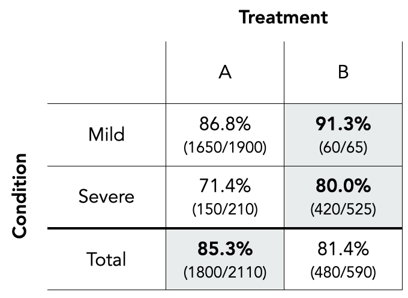
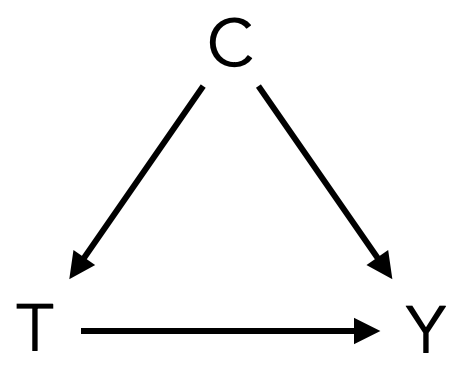
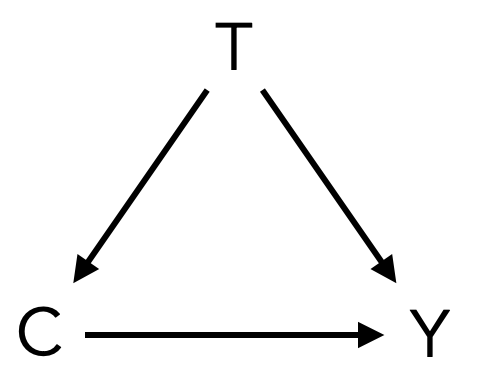
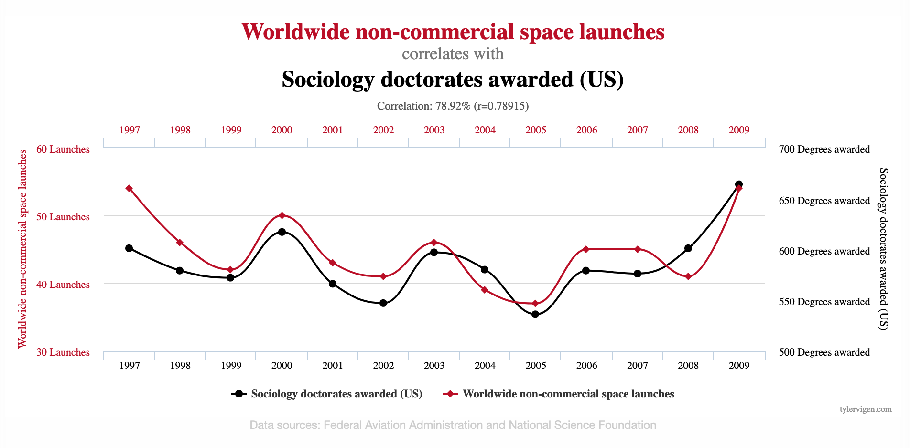

Whether in academia or industry, research questions are often causal in nature. That is, we want to know whether a medical procedure caused patients to recover, whether a policy intervention caused some behavioral change in the population, whether a new store design caused an increase in sales, or whether a recently implemented feature caused an increase in customer retention. In practice, though, it is surprisingly common to avoid language that refers to causal concepts. A 2022 study by Haber et al. which examined over 1,000 articles published in high-profile medical and epidemiological journals found that even though few articles declared an explicit interest in estimating causal effects, a third of the studies issued action recommendations (implying that a causal mechanism has been found), and the majority of the studies used language that implied causality (e.g., “X affects Y”, “X is linked to Y”, “X is followed by Y”). What we end up with can be called “Schrödinger’s causal inference”: researchers caution against causal interpretations but still offer causal interpretations themselves. Why is that? Apparently, researchers intend to estimate causal effects but shy away from using the causal inference methods which would actually allow to make this intention explicit. One likely reason is that causal inference goes beyond the realm of traditional statistics, introducing additional assumptions as well as a more rigorous way of thinking about relationships between variables. We can make this more concrete by looking at an example of Simpson’s paradox that will shine a light on why pure statistics isn’t enough to establish causal effects.
Simpson’s Paradox
Suppose that until recently, no treatment had been available for some unnamed disease. However, two newly developed treatments, treatment \(A\) and treatment \(B\), have shown promise in clinical trials and since became available to medical professionals. While treatment \(A\) is a surgical procedure, treatment \(B\) is a small molecule drug that blocks a key protein involved in the disease process.
Our task is to analyze the following table which shows the condition of the patient at the time the treatment was decided as well as the corresponding success rates and case counts. Note that, due to supply chain and production issues, treatment \(B\) is more scarce than treatment \(A\).

We can see that treatment \(B\) had a better recovery rate than treatment \(A\) for patients with mild cases (91.3% vs 86.8%), as well as patients with severe cases (80.0% vs 71.4%). However, in the whole population, the patients who were treated with treatment \(A\) had a better recovery rate than the patients treated with treatment \(B\) (85.3% vs 81.4%). This is an example of Simpson’s paradox, a statistical phenomenon in which a statistical association that holds for an entire population is reversed in every subpopulation.
If we had to make the decision which treatment to recommend for a patient, how should we interpret the data? Should we recommend treatment \(A\) if we don’t know the condition of the patient and \(B\) if we do? That can’t be right; a patient has to be either a mild or a severe case even if we don’t know the condition and \(B\) apparently is superior for both conditions. So should we just rely on the segregated data because the success rates of the subpopulations provide more specific information or should we only consult the aggregated success rate because it is more general? In short, which is better: treatment \(A\) or treatment \(B\)?
It turns out that we cannot answer this question with pure statistics. Without knowing the causal structure of the data, we simply cannot tell whether we should prefer treatment \(A\) or treatment \(B\). To understand this key point, let’s consider two different scenarios.
Scenario 1: In scenario 1, the patient’s condition \(C\) is a cause of both the treatment \(T\) and the outcome \(Y\) (i.e., the recovery of the patient). This would be the case when doctors decide to reserve treatment \(B\) for patients with severe conditions (e.g., because it is more expensive or less invasive or both). Then, having a severe condition would cause patients to be less likely to recover (simply because of their condition) and more likely to receive treatment \(B\). It follows that treatment \(B\) will be associated with a lower success rate in the entire population just because the patient’s condition is a common cause of both the treatment and the outcome. We say that condition confounds the effect of treatment on recovery. We can correct for this confounding by analyzing the relationship of \(T\) and \(Y\) among patients with the same condition. In our example, this would mean that treatment \(B\) is the better treatment because it leads to a higher recovery rate in both subpopulations (i.e., the subpopulations with mild and severe cases, respectively). We can visualize the causal structure of this scenario with the following graph:

Scenario 2: In scenario 2, the prescription of treatment \(T\) is a cause of both the patient’s condition \(C\) and the outcome \(Y\). This would be the case, for example, when the supply chain issues of treatment \(B\) lead to a time delay between the prescription and the reception of the treatment, while treatment \(A\) can be applied instantaneously. If the severity of the disease worsens over time, this would mean that the assignment of treatment \(B\) can cause patients to transition from mild to severe cases of the disease, ultimately causing a lower recovery rate. In that case we could conclude that, even though treatment \(B\) might be more effective than treatment \(A\) once received by the patient, prescribing treatment \(A\) is overall more effective. The causal diagram highlights the difference to scenario 1:

What should we make of this? Comparing both scenarios shows that, without knowing the story behind the data it is impossible to determine which treatment is better. It was only after considering the causal mechanisms generating the data that we were able to make a correct conclusion. Viewed that way, the apparent Simpson’s paradox isn’t actually a paradox; it merely shows impressively that making causal claims requires making causal assumptions.
Association and Causation
Whether you have engaged in some data analysis yourself or followed a heated discussion about the correct way to interpret some data on Twitter, you have likely heard of the mantra “correlation doesn’t imply causation.” To see what this means, let’s have a look at an example. As it turns out, the yearly number of non-commercial space launches has a high degree of correlation with the yearly number of sociology doctorates awarded in the United States.

We can probably agree there are no causal relationships at play here, meaning that this is a spurious correlation. Many more examples like this, showcasing fun but meaningless correlations, can be found on Tyler Vigen’s very entertaining website spurious correlations.
It is actually relatively easy to stumble upon such spurious correlations. If you collect a large enough dataset (or generate one yourself with just random data) you will find correlations between some variables that are entirely due to chance. More importantly, however, correlation can be (and often is) caused by confounding variables (also called confounders or lurking variables). An example: You might find a positive correlation between ice cream sales and the number of shark attacks. It is safe to assume that this isn’t due to ice cream somehow attracting sharks or shark attacks causing people to console themselves with ice cream. Instead there is a confounding variable: temperature. Higher temperatures not only cause more people to enjoy some ice cream, they also cause more people to go for a swim in the ocean risking an unfortunate encounter with a shark. Thus, we say that the correlation between both variables is due to confounding.
Since correlation is merely a measure of linear statistical dependence, it is better to use the term association when referring to statistical dependence in general. But what does it really mean when we say “association is not causation” or “association does not imply causation”? In essence, this means that the amount of association and the amount of causation between two variables can be different. It is possible that none of the association is causal (probably like in the example of space launches and sociology doctorates) and it is also possible that some or even all of the association is causal. This is what motivates the field of causal inference. With statistical tools alone it is not possible to determine the amount of causation hiding behind association. Instead we have to specifically address the causal mechanisms that are generating our data.
Causal Inference in Data Science
Having established the need for causal inference, what is its role in the realm of data science? A useful mental model is to distinguish between three different tasks (Hernan, Hsu & Healy, 2019): description, prediction, and causal inference.
Descriptive analysis is usually based on quantitative summaries of variables of interest and involves methods ranging from simple counts or proportions to sophisticated data visualizations or even more advanced techniques like unsupervised clustering. The goal is to describe the properties of some data, which, in and of itself, can help us understand aspects of the world that we are interested in. For example, a task that would be descriptive in nature is gathering the distribution of household heating sources by region. This might reveal patterns that can be used to inform policy decisions.
Predictive modeling aims to generate accurate predictions of a variable (or some variables). In a prediction task, we only care about the predictive performance and generalization power of our model and will exploit any available variable that helps us in this regard. That is, we look for predictive information and not for causal information, which is why we should never assume that a given coefficient in a predictive model has a causal interpretation. A good example is the prediction of used car prices using features like age and mileage. The exact nature of the causal relationships at play here is not really relevant, we simply want to exploit all the information that is useful for our prediction task.
Finally, causal inference aims to understand the impact of one variable, often called the treatment, on another variable, often called the outcome. That is, we want to find that part of the association between the treatment and the outcome that is causal in nature. For example, we might want to find the causal effect of air pollution on life expectancy or the causal effect of one-time bonus payments on employee retention. Thinking back to our example with Simpson’s paradox, the important point is that making valid causal inferences requires us to consider the causal mechanisms that generated our data.
Of course, this is not to say that description, prediction, and causal inference are not related. They do, in fact, overlap in some respects: Descriptive analysis increases our understanding of the data no matter what we ultimately try to achieve and in some cases (i.e., if the causal structure of the data allows it) can actually be used to discern causal relationships. Also, while predictive models aren’t generally good causal models because they only care about predictive performance (which often goes hand in hand with introducing biases), some part of their predictive power stems from the causal relationships in the data. Causal models, on the other hand, do have some predictive power because the causal effect of the treatment tells us something about the outcome.
Summary
Causal inference is an essential tool for rigorous decision-making. Without addressing the causal structure of our data, we can only make associational claims – but what we actually often aspire to do is make causal claims. That is, we don’t merely want to know whether patients who got some treatment eventually got better, we want to know whether they got better because of the treatment. This is the purpose of causal inference.
In the following blog posts of this series we’ll discuss the topic in much more depth. We’ll go into how we can articulate causal assumptions, how we can build causal models and link them to our data, and how we can finally answer our causal questions in a wide range of different settings.